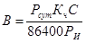

СТРОИТЕЛЬНЫЕ НОРМЫ И ПРАВИЛА
ЖИВОТНОВОДЧЕСКИЕ, ПТИЦЕВОДЧЕСКИЕ
И ЗВЕРОВОДЧЕСКИЕ
ЗДАНИЯ И ПОМЕЩЕНИЯ
СНиП 2.10.03-84
ГОССТРОЙ СССР
МОСКВА 1984
РАЗРАБОТАНЫ Гипронисельхозом Минсельхоза СССР (инженеры И.С. Быстрицкий, Э.И. Пищик) при участии ЦНИИЭПптицепрома, ЦНИИЭПовцепрома, ЦИТЭПсельхозпрома, ВНИИВС Минсельхоза СССР, ЦНИИЭПсельстроя Минсельстроя СССР и НИИСФ Госстроя СССР.
ВНЕСЕНЫ Минсельхозом СССР.
ПОДГОТОВЛЕНЫ К УТВЕРЖДЕНИЮ Отделом технического нормирования и стандартизации Госстроя СССР (инж. Н.В. Цуганов).
С введением в действие СНиП 2.10.03-84 «Животноводческие, птицеводческие и звероводческие здания и помещения» утрачивает силу СНиП II-99-77 «Животноводческие, птицеводческие и звероводческие здания и сооружения».
|
Государственный комитет СССР по делам |
Строительные нормы и правила |
СНиП 2.10.03-84 |
|
Животноводческие, птицеводческие и звероводческие здания и помещения |
Взамен |
1.1. Настоящие нормы должны соблюдаться при проектировании животноводческих, птицеводческих и звероводческих зданий и помещений.
1.2. Категории помещений и зданий по взрывопожарной и пожарной опасности устанавливаются в технологической части проекта в соответствии с требованиями НПБ 105-95 МВД России «Определение категорий помещений и зданий по взрывопожарной и пожарной опасности», ведомственными (отраслевыми) нормами технологического проектирования или специальными перечнями, устанавливающими указанные категории и утвержденными в установленном порядке.
Измененная редакция. Изм. № 1.
1.3. Общая площадь здания определяется в соответствии со СНиП 2.09.02-85*.
Измененная редакция. Изм. № 1.
1.4. Административно-бытовые здания и помещения следует проектировать в соответствии со СНиП 2.09.04-87*.
Измененная редакция. Изм. № 1.
1.5. Обеспечение доступности зданий и помещений, где возможно трудоустройство инвалидов, следует выполнять в соответствии с требованиями, изложенными в СНиП 2.09.02-85*, санитарно-бытовое обслуживание работающих инвалидов - в соответствии со СНиП 2.09.04-87*
Квота рабочих мест, виды и группы инвалидности работников, которым может быть предоставлена работа в животноводческих, птицеводческих и звероводческих зданиях и помещениях, устанавливаются в задании на проектирование с участием в его составлении территориальных органов социальной защиты населения в соответствии с правилами, установленными в РДС 35-201-99 Госстроя России и Минтруда России «Порядок реализации требований доступности для инвалидов к объектам социальной инфраструктуры».
Пункт 1.5 введен дополнительно. Изм. № 1.
2.1. Животноводческие, птицеводческие и звероводческие здания следует проектировать, как правило, одноэтажными, прямоугольной формы в плане, с параллельно расположенными пролетами одинаковой ширины и высоты. Здания с пролетами двух взаимно перпендикулярных направлений, а также пролетами разной ширины и высоты допускается проектировать только при обосновании. Перепады высот менее 1,2 м между пролетами одного направления многопролетных зданий не допускаются.
Здания для свиней, кроликов и птицы допускается проектировать многоэтажными при обосновании.
Размеры зданий и количество этажей в них следует принимать на основании технико-экономического сравнения вариантов содержания животных и птицы в зданиях различной ширины и этажности.
В одном здании, как правило, следует объединять помещения производственного, подсобного и складского назначения.
2.2. При проектировании животноводческих, птицеводческих и звероводческих зданий необходимо принимать параметры и габаритные схемы в соответствии с ГОСТ 23840-79, ГОСТ 23839-79, ГОСТ 24336-80 и ГОСТ 24337-80.
2.3. Высота помещений от пола до низа конструкций подвешенного оборудования и коммуникаций во всех зданиях должна быть не менее 2 м в местах регулярного прохода людей и 1,8 м в местах нерегулярного прохода людей.
Высота (в чистоте) чердачных помещений, предназначенных для хранения грубых кормов и подстилки, в средней части чердака и в местах размещения люков в перекрытии должна быть не менее 1,9 м.
|
Внесены Министерством сельского хозяйства СССР |
Утверждены |
Срок введения в действие |
2.4. Количество этажей животноводческих, птицеводческих и звероводческих зданий, степень огнестойкости и площадь этажа между противопожарными стенами следует принимать по таблице.
|
Категория производства |
Допускаемое количество этажей |
Степень огнестойкости зданий |
Площадь этажа между противоположными стенами зданий, м2 |
|
|
одноэтажных |
многоэтажных |
|||
|
В |
9 |
II |
Не ограничивается |
|
|
3 |
III |
3000 |
2000 |
|
|
2 |
IV |
2000 |
1200 |
|
|
1 |
V |
1200 |
- |
|
|
Д |
Не ограничивается |
II |
Не ограничивается |
|
|
3 |
III |
5200 |
3500 |
|
|
2 |
IV |
3500 |
2000 |
|
|
1 |
V |
2000 |
- |
|
Примечание. Площадь этажа между противопожарными стенами одноэтажных зданий V степени огнестойкости для содержания птицы и овец, указанную в таблице для производства категории В, допускается увеличивать до 1800 м2 по требованиям технологии.
2.5. В животноводческих, птицеводческих и звероводческих зданиях (с производствами категорий В и Д) допускаются:
в одноэтажных зданиях II степени огнестойкости (без чердаков) - деревянные конструкции, имеющие предел огнестойкости и огнезащиту в соответствии со СНиП II-2-80;
в одноэтажных зданиях III и IV степени огнестойкости - внутренние деревянные не защищенные от возгорания стойки (колонны) сечением по расчету, но не менее 180Х180 мм или диаметром в верхнем отрубе не менее 160 мм;
в зданиях IV степени огнестойкости - чердачные перекрытия из сгораемых материалов;
в зданиях любой степени огнестойкости - фронтоны и утеплители чердачных перекрытий из сгораемых материалов;
в зданиях, размещаемых в летних лагерях и на отгонных пастбищах, - кровли из местных сгораемых материалов (камыша, соломы, щепы и др.).
2.6. При проектировании животноводческих зданий любой степени огнестойкости с чердаками, предназначенными для хранения грубых кормов (сена, соломы) и сгораемой подстилки, следует предусматривать:
кровлю из несгораемых материалов;
предохранение электропроводки на чердаке от механических повреждений;
защиту деревянных чердачных перекрытий от возгорания со стороны чердачного помещения глиняной обмазкой толщиной 20 мм по сгораемому утеплителю (или равноценной огнезащитой) или несгораемым утеплителем;
заполнение люков в чердачном перекрытии (для подачи кормов и подстилки в помещения) с пределом огнестойкости 0,75 ч в зданиях II и III степени огнестойкости и 0,25 ч зданиях IV степени огнестойкости.
2.7. Встроенные в животноводческие, птицеводческие и звероводческие здания или пристроенные к ним отдельные помещения со взрывопожароопасными или пожароопасными производствами и помещения для хранения запаса грубых кормов должны быть отделены от других помещений стенами или перегородками с пределом Огнестойкости не менее 1 ч и пределом распространения огня не более 40 см и перекрытиями с пределом огнестойкости не менее 0,75 ч и пределом распространения огня не более 25 см и иметь выход непосредственно наружу. Допускается из помещений для хранения текущего запаса грубых кормов, инвентаря и подстилки устраивать выход внутрь помещений. Заполнения проемов (дверей, ворот, технологических проемов) в указанных стенах (перегородках) должны выполняться из несгораемых или трудносгораемых материалов и быть оборудованы устройствами для самозакрывания.
2.8. Пути эвакуации людей из помещений животноводческих, птицеводческих и звероводческих зданий следует предусматривать в соответствии со СНиП 2.09.02-85*.
Для эвакуации людей допускается предусматривать в распашных и раздвижных воротах калитки (без порогов или с порогами высотой не более 0,1 м), открывающиеся по направлению выхода из здания.
Выходы для животных, птицы и зверей из зданий и помещений должны предусматриваться в соответствии с нормами технологического проектирования; эти выходы допускается учитывать при расчете эвакуационных выходов для людей, если они отвечают требованиям, предъявляемым к эвакуационным выходам.
Дымоудаление из помещений, не имеющих световых или светоаэрационных фонарей, должно предусматриваться в соответствии со СНиП 2.09.02-85*, при этом устройство автоматического открывания вытяжных шахт при пожаре не требуется.
Измененная редакция. Изм. № 1.
2.9. Животноводческие, птицеводческие и звероводческие здания следует проектировать преимущественно каркасными с применением сборных несущих и ограждающих конструкций с учетом требований ТП 101-81*. Допускается применение конструкций и изделий из местных строительных материалов.
Примечания: 1. Материалы строительных конструкций и их отделок, облицовок и защитных покрытий должны быть безвредными для животных, птицы и зверей в доступных для них местах.
2. Каналы и бассейны для нутрий должны быть облицованы бетоном или камнем.
2.10. Невентилируемые покрытия животноводческих и птицеводческих зданий над помещениями с влажным или мокрым режимом допускаются только при условии, если устройством пароизоляции исключается накопление влаги в конструкциях покрытий за годовой период эксплуатации.
Кровли зданий шириной не более 27 м следует проектировать, как правило, из асбестоцементных волнистых листов, а зданий большей ширины - рулонными или мастичными (армированными стеклотканью).
2.11. Животноводческие, птицеводческие и звероводческие здания следует проектировать без внутренних водостоков. Здания с покрытиями шириной (с уклоном в одну сторону) более 36 м допускается проектировать с внутренними водостоками.
2.12. Полы в животноводческих, птицеводческих и звероводческих зданиях и покрытия на выгулах следует проектировать в соответствии со СНиП 2.03.13-88 и нормами настоящего раздела с учетом требований технологии.
Полы помещений для содержания животных и птицы должны быть беспустотными. Допускается в местах содержания поросят устройство несгораемых полов с пустотами, если они используются для воздушного обогрева пола.
Верхний слой пола в местах отдыха животных при содержании их без подстилки определяется показателем теплоусвоения поверхности пола, величина которого принимается в соответствии с нормами технологического проектирования или с технологической частью проекта.
Показатель теплоусвоения решетчатых полов и полов помещений для содержания животных на подстилке, птицы и овец не нормируется.
Полы, систематически смачиваемые жидкостями, следует проектировать с уклонами. Уклоны полов, лотков и каналов следует принимать: в помещениях для содержания птицы в клетках и лотков вдоль проходов во всех помещениях - не менее 0,005; в технологических элементах помещений (в стойлах, денниках, станках и др.) и поперечные в проходах - не менее 0,015. Решетчатые (щелевые) полы и каналы (лотки) для удаления навоза механизмами следует проектировать без уклона. Уклоны покрытие на выгулах для животных и птицы и полов в переходных галереях между зданиями (для перегона животных) должны быть не более 0,06.
Измененная редакция. Изм. № 1.
2.13. Вертикальные нагрузки на бруски решетчатого пола устанавливаются в строительном задании на основании технологических решений.
Конструкции, на которые опирается решетчатый пол, следует рассчитывать на нагрузки в соответствии со СНиП 2.01.07-85*.
При расчете конструкций решетчатого пола следует принимать коэффициент динамичности 1,2.
Измененная редакция. Изм. № 1.
2.14. Ограждения технологических элементов помещений (стойл, денников, станков, боксов и др.) и выгулов, как правило, должны быть сборными из изделий заводского изготовления.
2.15. Поверхности строительных конструкций внутри помещений, предназначенных для содержания животных и птицы, должны быть окрашены в светлые тона и допускать влажную уборку и дезинфекцию.
Стены доильных залов, помещений для обработки и хранения молока, инкубационных и выводных залов, моечных, лабораторий, помещений для искусственного осеменения животных и приготовления кормов должны быть облицованы или окрашены на высоту 1,8 м влагостойкими материалами, допускающими систематическую дезинфекцию и мытье водой; остальная часть стен и потолки указанных помещений должны быть окрашены в светлые тона.
2.16. Теплотехнические расчеты ограждающих конструкций зданий следует производить в соответствии со СНиП II-3-79*, при этом коэффициент теплоотдачи внутренней поверхности ограждений следует принимать:
для стен помещений, где заполнение животными составляет более 80 кг живой массы на 1 м2 пола, - 12 Вт/ (м2 . °С) [10 ккал/(м2 . ч . °С)];
для стен помещений, где заполнение животными составляет 80 кг и менее живой массы на 1 м2 пола, и для потолков (чердачных перекрытий или покрытий) всех животноводческих и птицеводческих зданий - 8,7 Вт/ (м2 . °С) [7,5 ккал/(м2 . ч . °С)].
Сопротивления теплопередаче наружных ограждающих конструкций животноводческих и птицеводческих зданий, определенные теплотехническим расчетом, должны уточняться для конкретных пунктов строительства исходя из экономических условий.
3.1. Внутренние системы водопровода и канализации животноводческих, птицеводческих и звероводческих зданий и помещений следует проектировать в соответствии со СНиП 2.04.01-85* и нормами настоящего раздела.
Измененная редакция. Изм. № 1.
3.2. Для животноводческих, птицеводческих и звероводческих зданий и помещений следует проектировать производственный водопровод для подачи воды питьевого качества (удовлетворяющей требованиям ГОСТ 2874) на поение животных, птицы и зверей, приготовление кормов, мытье животных и полов, уборку помещений, мойку и охлаждение оборудования. В районах, где невозможно получить воду питьевого качества для всех указанных нужд, допускается качество воды (за исключением воды для мойки и охлаждения молочного оборудования) назначать по соответствующим нормам технологического проектирования.
Примечание. Необходимость подогрева воды для поения животных в холодный период года и температура этой воды устанавливаются в соответствии с нормами технологического проектирования.
Измененная редакция. Изм. № 1.
3.3. Животноводческие, птицеводческие и звероводческие здания и помещения должны быть оборудованы поилками, кранами для мытья полов и специальными приборами.
Проточные поилки в птицеводческих зданиях при необходимости изменения уровня установки или демонтажа их на время уборки подстилки и помета машинами должны присоединяться к внутренним сетям водопровода и канализации, как правило, гибкими шлангами.
3.4. Ввод водопровода в конюшни следует предусматривать в отапливаемое помещение, где на ответвлениях водопроводной сети, идущих в неотапливаемые помещения, необходимо предусматривать запорные вентили, а за пределами отапливаемого помещения на сухих участках этих ответвлений - краны или соединительные гайки. При отсутствии в конюшнях отапливаемых помещений должны предусматриваться водоразборные колонки незамерзающего типа.
В конюшнях, где температура внутреннего воздуха в холодный период года постоянно поддерживается выше плюс 2 °С, допускается предусматривать внутренний водопровод с подводкой воды к поилкам.
3.5. Овчарни, как правило, внутренним водопроводом не оборудуются. Для поения овец, содержащихся в овчарнях, следует предусматривать подводку воды к групповым поилкам, устанавливаемым на выгулах (открытых базах). Ввод водопровода следует предусматривать в родильные отделения и тепляки.
3.6. В одноэтажных животноводческих, птицеводческих и звероводческих зданиях, за исключением указанных ниже, внутренний противопожарный водопровод не предусматривается.
В зданиях для содержания птицы в клетках из сгораемых материалов при вместимости здания или его части между противопожарными стенами более 25 тыс. птиц, в животноводческих и птицеводческих зданиях с чердаками для хранения грубых кормов и сгораемой подстилки при площади чердака между противопожарными стенами 2000 м2 и более, в зданиях высотой два этажа и более, а также в одноэтажных многопролетных зданиях с производством категории В площадью более 10 000 м2 следует предусматривать внутренний противопожарный водопровод с расчетным расходом воды 2,5 л/с (одна струя).
Примечание. При определении расчетного расхода воды на наружное пожаротушение навесов для зверей и кроликов объем навесов следует принимать с коэффициентом 0,5. Объем навеса определяют умножением площади вертикального поперечного сечения (в пределах осей наружных стоек, верхнего очертания кровли и уровня пола) на длину навеса.
3.7. Свободный напор воды в трубопроводах у проточных и групповых поилок следует принимать не менее 2 м, у автопоилок - по данным завода - изготовителя поилок.
3.8. Прокладку водопроводных труб в зданиях и помещениях следует предусматривать открытой - по стенам и колоннам, а также по стационарным кормушкам, клеткам, постоянным ограждениям станков, стойл, денников и др.
Для поения животных и птицы на выгулах необходимо предусматривать прокладку водопроводных труб для подачи воды к поилкам, размещаемым на выгулах, при этом не допускается прокладка водопроводных труб в местах, где они могут соприкасаться с навозом и пометом, подвергаться механическим воздействиям, мешать уборке навоза и помета или транспортированию кормов.
3.9. В животноводческих, птицеводческих и звероводческих зданиях на сети производственного водопровода следует предусматривать установку кранов для мытья полов из расчета радиуса действия 30 м и напора на спрыске не менее 5 м.
3.10. Для заполнения противопожарных емкостей (резервуаров, водоемов) водой на вводах внутреннего водопровода в здания необходимо предусматривать соединительные головки диаметром 50 мм для присоединения пожарных рукавов.
3.11. Для производственного водопровода животноводческих, птицеводческих и звероводческих зданий, как правило, следует применять пластмассовые трубы, разрешенные для питьевых водопроводов, а также стальные тонкостенные неоцинкованные трубы. Применение стальных труб с толщиной стенки и диаметром, большими требуемых по расчету, не допускается.
3.12. Для учета общего расхода воды предприятием следует предусматривать установку водомера на вводе водопровода. Необходимость установки водомера на вводах в отдельные здания должна быть обоснована технологической частью проекта.
3.13. Установку запорной арматуры на сети производственного водопровода следует предусматривать: на вводе водопровода в здание; на ответвлениях от магистрали; на подводках к групповым поилкам, технологическому оборудованию и сеткам для подмывания вымени.
На сети производственного водопровода животноводческих, птицеводческих и звероводческих зданий и помещений следует предусматривать спускные устройства для опорожнения трубопроводов.
3.14. Расчетный расход воды на поение животных из автопоилок следует определять в соответствии с обязательным приложением 1.
3.15. Расход воды специальными приборами и процент одновременного действия их следует принимать в соответствии с обязательным приложением 2.
3.16. Внутреннюю канализацию животноводческих и птицеводческих зданий следует предусматривать для отведения:
а) производственных сточных вод от мытья животных, уборки помещений и доильных площадок, от мойки оборудования (посуды, аппаратуры, молокопроводов и др.), а также от проточных поилок в птичниках;
б) хозяйственно-бытовых вод от санитарных приборов.
3.17. В одноэтажных птицеводческих зданиях для клеточного содержания птицы производственные сточные воды (от мытья полов, мойки оборудования и др.) допускается собирать и отводить к трапам открытыми лотками; размеры лотков определяются расчетом, но во всех случаях глубина их должна быть не более 120 мм, а ширина - не менее 100 мм.
3.18. На магистральных выпусках сточных вод от проточных поилок, устанавливаемых в птицеводческих зданиях, необходимо предусматривать уловители для пуха и пера.
3.19. Технологическое оборудование для приема, транспортирования и обработки молока, а также мойки молочной посуды следует присоединять к канализационной сети с разрывом струи не менее 20 мм.
3.20. Устройства для сбора и удаления навоза (помета) и стоков от мытья полов в зданиях и помещениях для содержания животных, птицы и зверей следует проектировать по соответствующим нормам технологического проектирования.
4.1. Системы отопления и вентиляции животноводческих, птицеводческих и звероводческих зданий следует проектировать в соответствии со СНиП 2.04.05-91* и нормами настоящего раздела.
Измененная редакция. Изм. № 1.
4.2. Системы отопления и вентиляции зданий должны обеспечивать в зоне размещения животных и птицы заданные метеорологические условия и чистоту воздуха: температуру, относительную влажность, скорость движения и газовый состав воздуха.
Все животноводческие и птицеводческие здания должны быть оборудованы вентиляцией. Необходимость отопления (охлаждения) этих зданий, а также производительность систем отопления (охлаждения) и вентиляции следует определять расчетом в зависимости от заданных параметров внутреннего и наружного воздуха, тепло-, влаго- и газовыделений в помещениях, тепла солнечной радиации и теплопотерь через ограждающие конструкции. Кондиционирование воздуха в помещениях для содержания животных и птицы допускается предусматривать по требованиям технологии при экономической целесообразности, если заданные метеорологические условия не могут быть обеспечены вентиляцией, в том числе и вентиляцией с испарительным охлаждением воздуха.
4.3. Теплоснабжение животноводческих и птицеводческих зданий для отопления и вентиляции, горячего водоснабжения и технологических нужд следует предусматривать централизованным - от тепловых сетей ТЭЦ и котельных. При технической возможности и экономической целесообразности допускается использование других источников тепла (электронагревательных устройств, теплогенераторов и т. п.).
В качестве теплоносителя следует принимать горячую воду температурой 150 °С. Применение в качестве теплоносителя пара, горячей воды температурой ниже 150 °С или другого теплоносителя допускается при обосновании.
4.4. Расчетные параметры внутреннего воздуха при проектировании отопления и вентиляции следует принимать:
а) в основных производственных помещениях - по нормам технологического проектирования животноводческих и птицеводческих предприятий и ветеринарных объектов;
б) в помещениях, для которых параметры внутреннего воздуха не установлены нормами технологического проектирования, - в соответствии с ГОСТ 12.1.005-76.
4.5. Расчетные параметры наружного воздуха следует принимать в соответствии со СНиП 2.04.05-91*:
при проектировании систем отопления, воздушных и воздушно-тепловых завес, а также кондиционирования воздуха - параметры Б;
при проектировании систем вентиляции с механическим побуждением и воздушного отопления для холодного периода года в зданиях для крупного рогатого скота, свиней, кроликов и птицы, проектируемых в районах со средней температурой наиболее холодной пятидневки ниже минус 10 °С, - параметры Б, а в этих же зданиях, проектируемых в районах с температурой 10°С и выше, и в зданиях для лошадей и овец - параметры А;
при проектировании систем вентиляции с механическим побуждением для теплого периода года - параметры А.
При проектировании систем отопления, вентиляции и кондиционирования воздуха следует предусматривать оптимальный режим работы отопительно-вентиляционного оборудования в течение года. При этом при промежуточных значениях температур наружного воздуха от 10 °С и ниже относительную влажность воздуха следует принимать равной:
для районов со средней температурой наиболее холодной пятидневки выше минус 15 °С - 85 %;
от минус 15 °С до минус 25 °С - 80 %;
от минус 25 °С и ниже - 75 %.
При проектировании естественной вентиляции в зданиях для крупного рогатого скота, свиней, кроликов и птицы расчетную температуру наружного воздуха следует принимать 5 °С, в зданиях для лошадей и овец - 2 °С.
Измененная редакция. Изм. № 1.
4.6. При определении тепловой мощности систем отопления и вентиляции животноводческих и птицеводческих зданий необходимо учитывать дополнительные для этих зданий теплопотери на нагрев поступающих извне кормов и на испарение влаги с подстилки и смоченных поверхностей и тепловыделения от подстилки.
4.7. В помещениях для содержания животных и птицы в случаях, когда теплопотери не компенсируются тепловыделениями, необходимо предусматривать воздушное отопление, совмещенное с приточной вентиляцией.
В родильных отделениях крупного рогатого скота, в помещениях для содержания свиноматок с поросятами, молодняка кроликов и птицы допускается применять системы отопления с местными нагревательными приборами.
Для обогрева поросят-сосунов и молодняка птицы младших возрастов следует предусматривать системы локального обогрева.
4.8. Температуру поверхности нагревательных приборов следует принимать:
а) в помещениях для содержания птицы на полу - не более 105 °С;
б) в помещениях для содержания птицы в клетках и животных, а также в других производственных помещениях - до 150 °С.
4.9. Нагревательные приборы и трубопроводы систем отопления и вентиляции должны размещаться в недоступных для животных и птицы местах или иметь защитные ограждения, при этом во всех случаях должна обеспечиваться возможность дезинфекции и очистки нагревательных приборов и трубопроводов.
4.10. Воздухообмен в помещениях для содержания животных и птицы следует определять расчетом исходя из условий обеспечения в зоне размещения животных и птицы заданных метеорологических условий и чистоты воздуха в соответствии с требованиями технологических норм проектирования или технологической части проекта.
Примечание. В случаях, когда технологическими требованиями устанавливаются минимальные объемы приточного воздуха на одну голову или единицу живой массы животных, производительность вентиляционных систем, определяемая расчетом для удаления вредностей, должна удовлетворять также и этим требованиям.
4.11. При содержании крупного рогатого скота на решетчатых полах следует предусматривать вытяжку из подполий и каналов в количестве не менее 30 % минимального воздухообмена.
В помещениях для содержания свиней и птицы следует предусматривать вытяжку из нижней зоны в объеме не менее 50 % минимального воздухообмена. При этом при содержании свиней на решетчатых полах вытяжку в указанном объеме следует организовывать из подполий и каналов.
При проектировании систем воздухораспределения в животноводческих и птицеводческих помещениях необходимо производить расчет распространения воздушных струй. Температура воздуха в рассчитываемом сечении на входе в зону размещения животных и птицы не должна отличаться от расчетной более чем на 2 °С, а скорость движения воздуха должна соответствовать нормам технологического проектирования.
4.12. В зданиях для содержания животных и птицы (в пределах одного помещения) допускается предусматривать рециркуляцию воздуха в соответствии со СНиП 2.04.05-91*.
Измененная редакция. Изм. № 1.
4.13. Горячее водоснабжение животноводческих и птицеводческих зданий следует проектировать в соответствии со СНиП 2.04.02-84*; температуру и расход горячей воды следует принимать по нормам технологического проектирования или технологической части проекта.
Измененная редакция. Изм. № 1.
5.1. Электротехнические установки должны проектироваться в соответствии с Правилами устройства электроустановок (ПУЭ) в установленном порядке.
Измененная редакция. Изм. № 1.
5.2. Освещенность основных производственных помещений животноводческих, птицеводческих и звероводческих зданий следует принимать по отраслевым нормам освещения сельскохозяйственных предприятий, зданий и сооружений, утвержденным в установленном порядке.
Измененная редакция. Изм. № 1.
5.3. Категории электроприемников и обеспечение надежности электроснабжения животноводческих, птицеводческих и звероводческих зданий и помещений следует принимать в соответствии с нормами технологического проектирования сельских электрических сетей и электростанций, утвержденными в установленном порядке.
Измененная редакция. Изм. № 1.
5.4. В помещениях для содержания животных необходимо предусматривать устройства для выравнивания электрических потенциалов.
Расчетный расход воды на поение животных из автопоилок Р, л/с, следует определять по формуле
Р = РИ П, (1)
где РИ - интенсивность поения животных, л/с, принимаемая по табл. 1;
Таблица 1
|
Интенсивность поения животных из автопоилки, л/с |
|
|
1. Крупный рогатый скот: |
|
|
а) коровы молочные и мясные |
0,1 |
|
б) быки и нетели |
0,07 |
|
в) молодняк крупного рогатого скота |
0,05 |
|
2. Свиньи: |
|
|
а) свиноматки подсосные с приплодом |
0,04 |
|
б) свиноматки супоросные и холостые, хряки, свиньи на откорме и ремонтный молодняк |
0,03 |
|
3. Лошади: |
|
|
а) взрослые |
0,1 |
|
б) молодняк |
0,05 |
|
4. Овцы: |
|
|
а) взрослые |
0,025 |
|
б) молодняк |
0,015 |
|
5. Звери и кролики: |
|
|
а) лисы и песцы |
0,005 |
|
б) норки, соболи и кролики |
0,003 |
Примечание. При поении животных из водопойных корыт и поилок иного типа (за исключением автопоилок) расчетный расход воды следует определять в соответствии с обязательным приложением 2 к настоящему СНиП.
П - количество одновременно действующих автопоилок на расчетном участке сети, принимаемое по табл. 2 в зависимости от количества автопоилок По, установленных на этом участке сети, и вероятности их действия В, определяемой по формуле

где Рсут - расход воды на поение одного животного, л/сут, принимаемый по нормам технологического проектирования; Кч - коэффициент часовой неравномерности, принимаемый по нормам технологического проектирования; С - количество животных, приходящихся на одну автопоилку, установленную на расчетном участке сети.
Таблица 2
|
П |
ПоВ |
П |
ПоВ |
П |
ПоВ |
П |
ПоВ |
П |
ПоВ |
П |
|
|
0,015 |
1 |
3,5 |
10 |
8,9 |
19 |
21 |
36 |
40,5 |
60 |
83 |
110 |
|
0,15 |
2 |
3,9 |
11 |
9,6 |
20 |
23 |
38 |
44,5 |
65 |
92 |
120 |
|
0,39 |
3 |
4,6 |
12 |
11 |
22 |
24,4 |
40 |
48,5 |
70 |
100 |
130 |
|
0,7 |
4 |
5,2 |
13 |
12,4 |
24 |
26 |
42 |
53 |
75 |
110 |
140 |
|
1,08 |
5 |
5,7 |
14 |
13,8 |
26 |
27,5 |
44 |
57 |
80 |
118 |
150 |
|
1,47 |
6 |
6,3 |
15 |
15,2 |
28 |
29 |
46 |
61 |
85 |
127 |
160 |
|
1,9 |
7 |
7 |
16 |
16,8 |
30 |
30,5 |
48 |
66 |
90 |
136 |
170 |
|
2,4 |
8 |
7,6 |
17 |
18,2 |
32 |
32,5 |
50 |
70 |
95 |
145 |
180 |
|
2,9 |
9 |
8,2 |
18 |
19,6 |
34 |
36,5 |
55 |
75 |
100 |
154 |
190 |
|
163 |
200 |
|
Прибор |
Расход воды, л/с |
% одновременного действия |
|
1. Проточная (желобковая) поилка для птицы |
0,05 |
100 |
|
2. Кран для налива водопойных корыт и поилок иного типа (за исключением автопоилок) |
0,3 |
100 - при одном кране; 50 - при двух кранах и более |
|
3. Кран для мытья полов |
0,5 |
По технологической части проекта |
|
4. Сетка для подмывания вымени |
0,07 |
100 |
Примечание. Расход воды технологическим оборудованием (специальными мойками, охладителями и др.) следует принимать по технологической части проекта.
СОДЕРЖАНИЕ